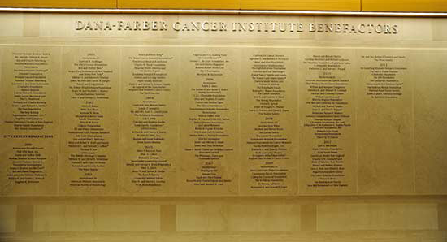
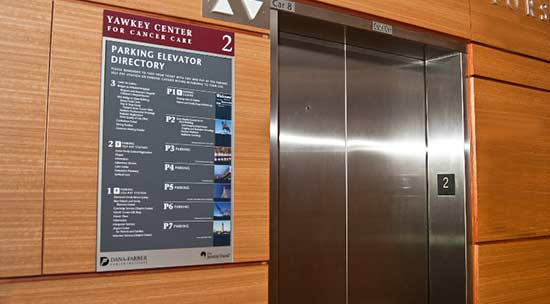

化名：柴女士
年龄：50
病症：黑色素瘤
就诊医院：哈佛大学医学院教学附属丹娜法伯癌症研究院
返回治疗实例
医生决定继续使用威罗菲尼，并在用药剂量上做出了调整。此外，医生还为患者免去了没有必要的放化疗措施。治疗后，患者的肿瘤明显缩小。
巨额的费用、语言的障碍、陌生的环境、渺茫的未来……对柴女士而言，她翻越这些看似不可逾越的鸿沟到日本看病，只是人生绝望中孤注一掷的选择。现在，五个月过去了，故事有了完全不同的走向，绝境中也有其他可能。

秋日的暖阳下，泡上一壶桂花蜂蜜茶，配上一碟刚买来的桂花绿豆糕和芝麻浇糖，42岁的柴女士没有想到自己还能这样享受悠闲的午后。今年年初，当被主治医生告知鼻咽部黑色素瘤复发并出现肺转移时，她陷入了一生中最低迷的时刻，寻遍国内最好的医院，虽然找到了对症的靶向药物，但由于该药尚未进入中国市场，她不得不四处寻药。眼看着救命的药物“弹尽粮绝”，是束手等待死神的来临，还是再做最后的挣扎？犹豫间，柴女士萌生了赴美看病的想法。
巨额的费用、语言的障碍、陌生的环境、渺茫的未来……对柴女士而言，她翻越这些看似不可逾越的鸿沟到日本看病，只是人生绝望中孤注一掷的选择。
然而5个月过去了，回想起一切，柴女士常常觉得恍惚，曾经准备接受生死考验、曾经准备经历未来长久的苦痛，在美国之旅中，一点痛苦挣扎都没有就解决了。
故事有了完全不同的走向，绝境中也有其他可能。
无计可施的癌症
柴女士从来就不是一个轻易向命运低头的人。早在2005年，她耳朵不适被确诊为中耳炎，治疗后很快症状消失了。2007年开始，她时常出现耳鸣、耳闷塞感，起初没觉得异常，想着可能还是中耳炎，直到2008年，症状越发厉害了，甚至影响到了听力，且吸鼻后痰中带血，并伴有间歇性头疼。
这让柴女士意识到问题的严重性，在山西当地的医院做完各项检查后，医生当即宣判她患的是鼻咽部黑色素瘤，属恶性肿瘤。“听到这个消息，瞬间觉得天塌下来了，甚至连抱头痛哭的时间都没有，第二天我们全家就出发去北京想寻求最好的治疗。”柴女士至今还记得在去北京求医的路上萦绕心头的只有三个问题：“确实是这个病吗？治疗的方法有哪些？治这个病最好的医生在哪里？”
常年做生意，柴女士一家在北京有多位关系可靠的朋友，他们一致推荐首都医科大学附属北京同仁医院是鼻咽部恶性肿瘤手术治疗方面最权威的医院，耳鼻喉科的两位专家看了片子后都认同鼻咽部黑色素瘤的判断。由于鼻咽位置隐蔽，且鼻咽恶性肿瘤的早期症状比较复杂，因此很容易漏诊、误诊。柴女士出现的耳部症状也正是肿瘤堵塞或压迫咽鼓管咽口，从而引起耳鸣、耳闷塞感及听力减退。最终专家制订的治疗方案为先放疗后手术，再化疗。
经历了漫长的治疗过程，化疗和放疗的副作用让柴女士痛苦不堪，恶心呕吐、精神不振、口咽部充血水肿伴有溃疡且进食困难，几个月时间体重骤减10多斤。然而，骨子里的坚毅终究支撑着柴女士挺了过来，最终检查显示柴女士的黑色素瘤通过手术已得到根治性清除，且各项肿瘤指标也恢复到正常范围。
随后的几年里柴女士定期去医院复查，一次次PET-CT结果正常也让她心中悬着的大石一点点放下，满心以为死神只是和自己开了个玩笑。
然而，每块乌云都镶着金边，每朵白云下都会有影子。事实证明，癌细胞的顽固远远超出了人们的想象，2012年开始，柴女士发现自己的耳朵出现发黑的现象，后来确诊证实，复发的黑色素瘤正在一步步侵吞着她的生命。最终在去年1月6日，柴女士接受了第二次手术——咽鼓管切除。术后在北京肿瘤医院进行了6个疗程的放疗和化疗。

这次的治疗已无力阻挡住癌细胞汹涌的攻势，今年元月，检查结果显示黑色素瘤出现了肺转移灶，国内治疗晚期黑色素瘤权威的医院——北京肿瘤医院主治医生认为柴女士的情况已不适合再进行手术，而放疗、化疗也没有有效的药物，癌症治疗的三驾马车无一能用。
就国内现有的条件而言，医生已无计可施，权威专家给柴女士最后的建议是她可以试试一个名为威罗菲尼的靶向药物，但唯一的难题是该药尚未在国内上市，只能自己到香港或海外购买。几乎动用了所有的关系网络，服用了几周后，药物的确很好地控制住了她的肿瘤，这让柴女士找到了一条重燃生命之火的希望之路。
可死神从来都不会轻易放过人，购药渠道意外中断，一时也找不到新的途径来购买此药，柴女士将每天8粒的用量一减再减。看着救命的药物即将“弹尽粮绝”，柴女士也深知很有可能自己的生命将随之止步。她清楚地记得那是一个春天的午后，当自己走出医院的门诊大楼，仰头看到北京难得一见的碧蓝晴空，可心里却堵得慌。
“突然间，我崩溃了，不能想象这样的场面，我需要努力，孩子需要母亲，丈夫需要妻子，对我来说没什么比生命更重要。”在那一刻，柴女士做了一个极为大胆的选择，去日本看病，她出于最朴素的考虑，这个药是美国生产的，且美国有最先进的设备和最顶级的专家，既然国内治不了，那就出国碰碰运气。
准备赴美
虽然出过国，但是没有去过美国，更别提美国的医疗制度，但柴女士深知，选择一家合适的医院将是此行成败的关键。
据北京中然核酸医院管理咨询有限公司创始人兼董事长蔡强介绍，海外就医的选择绝不该是盲目的。“美国有5000多家医院，80多万医生，需要在这些医院医生中进行筛选。而5000多家医院中，只有68家是美国国家癌症研究所(National Cancer Institute,简称 NCI)指定的癌症中心，所以治疗癌症的医院毫无疑问是从这68家里面选。”
若是要自助赴日就医的患者，蔡强给出的建议是可以参考《美国最佳医院排行榜》，其每年更新一次，由第三方机构根据死亡率、治愈率、病人满意度、医疗事故发生概率等进行综合排名后发布，同时也有各种专科如癌症专科、心脏病学及心外科等排名。
根据2014年的美国最佳癌症医院排行榜，前五位的是纪念斯隆?凯特琳癌症中心(Memorial Sloan Kettering Cancer Center)、MD.安德森癌症中心(University of Texas MD Anderson Cancer Center)、梅奥诊所(Mayo Clinic)、丹娜法伯/布列根和妇女医院癌症中心(Dana-Farber/Brigham and Women's Cancer Center)和约翰?霍普金斯医院(Johns Hopkins Hospital)。它们各有所长，不仅有很强的医疗团队，后面还有庞大的科研机构为依托。
最终在海外医疗服务机构的帮助下，柴女士选择将最后的希望寄托在哈佛大学医学院附属丹娜法伯/布列根和妇女医院癌症中心的F. Stephen Hodi, Jr.教授身上，“丹娜法伯/布列根和妇女医院癌症中心在今年全美最佳癌症医院排行榜上位列第四，其成人肿瘤的治疗优势全美领先，儿童肿瘤的治疗更是历年全美排名第一。而身为该医院黑色素瘤中心主任，Hodi也是国际黑色素瘤研究联盟（Society for Melanoma Research）创始人，更是美国NCCN《黑色素瘤诊治指南》的制定者，可以说他在黑色素瘤基因治疗、免疫治疗方面堪称世界级权威专家。”
一个月后，坐在美国医院诊疗室里的柴女士更加庆幸于自己当初的这个选择。
麻烦的预约
在中国，只要病人愿意，或是花重金买一张黄牛号，或是凌晨起床排队，当天便能见到医生。
但若是去日本看病，绝不是简单地买张机票，直接到麻省或者梅奥的门前，把一大摞病例和影像资料丢给医生。
预约，是日本看病的基本流程。
美国联盟医疗体系（Partners HealthCare System，简称PHS）由麻省总医院、布列根和妇女医院两家全美领先的学术医疗中心联合创建，是一个非营利性的综合卫生保健系统，位于马塞诸塞州的波士顿。
据美国联盟医疗体系副总裁、PHS国际部总裁Gilbert H. Mudge博士（以下简称Dr. Mudge）介绍，在美国每个家庭都有专门家庭医生，发生各种病痛先找家庭医生，由他们做出基本判断，需要的话家庭医生会将病人转去社区医院、专科医生、综合医院。一级一级的转诊制度让医疗资源运转得更有效率。
和中国不一样，美国寻常的呼吸道和慢性疾病基本在社区医院解决，只有那些疑难杂症才会被转到专科医生或综合医院里。“美国所有大型医院都必须预约，这样可以更好为患者节约时间，不但可避免看错科室找错医生的窘境，也可以确保患者就诊时，医生已经研究过病例，从而能更好地与患者讨论治疗方案。”Dr. Mudge说道。
“转诊制度对于中国患者来说可谓是一道高高的门槛，要准备齐全真是无比痛苦。”柴女士感叹，没有一个中国医生愿意帮自己转诊，而且多年以来的就医病历早已是七零八落，有部分报告甚至是手写的，而美国医院预约要提供详细的检查报告、病史、手术记录、用药记录、病理报告和影像报告，最好还能和前任主治医生交流。部分医院还要求将CT胶片转换成DICOM数码格式。“而这一切都是需要我们自己收集、整理、翻译并制成电子文档，还要上传到美国的医院。”整理病历就让柴女士有些抓狂。
“对中国患者来说比较关键的是如何开始。”Dr. Mudge表示，当然拥有足够语言能力的患者完全可以在医院的网站上通过预约通道填写申请资料，并通过线上提交准备好的诊断书、病例、文字和影像检查报告，或是给指定的邮箱发送邮件，也可以直接拨打医院国际部电话。实际操作中Dr. Mudge发现，如果只是通过网络搜索来联系美国医院是非常困难的，“医院曾收到过完全看不懂的病历，那就需要重新翻译。”虽然美国各大医院都有专门的国际中心，如麻省总医院以及布列根和妇女医院两家的翻译团队提供25种语言的翻译，“但这样申请就医的后果将耽误病人的治疗时间。”
Dr. Mudge特别提醒中国患者，一定要把病人的所有资料翻译成英文提供给院方，有哪种癌症，做过哪种活检检查、影像学资料，中国的主治医生说过些什么，治疗方案是怎样的。“掌握越多的信息，才能越好地提供最佳治疗，如果没有有效的资料是很难做出尽快的决定。”同时，Dr. Mudge也表示，身为院方更希望中国患者能通过正规的服务机构来就医，这也将对他们整个看病过程提供有效帮助。
而柴女士总结的经验是，整理出一份言简意赅的病历摘要很是关键，“并不是单纯地提供给美国院方一份病历资料的总集，而是要整理出关键信息。不但要全面概括在国内的就医经历，不单单是目前所患疾病的情况，就连多年前是否接受过手术，患过哪些病症、有无家族病史也都要提及，同时还要有重点地突出目前遇到的瓶颈以及医生给予的建议。”
这一切还要用专业的医疗英语翻译出来。“并不是简单的英语翻译，往往一个专有名词翻译不当意思就千差万别。”柴女士强调对病历翻译的专业性一定要引起足够重视。
如果医院同意接受这个病患，将发出一张预约信，上面不仅有预约的时间和地点，还有医院或医生的联系方式。
按照惯例，柴女士在拿到医院预约单后去大使馆办理签证，由于是出国看病适合办理医疗签证。她还记得丹娜法伯癌症研究院给自己安排的初诊时间为5月16日，距离自己开始准备赴日就医不到一个月。根据蔡强介绍，对于多数疾病而言，从提出申请，到医生的初次问诊，最快也要两周到四周的等待时间，“当然也可能更长，其中预约单要等待2周左右，申请签证也要2周。”
意外的免单
5月13日，柴女士在丈夫的陪同下飞赴位于波士顿的丹娜法伯/布列根和妇女医院癌症中心。内心忐忑不安，不知道要花多少钱，美国医疗以贵闻名于世，也不知道能否治好，因为黑色素瘤出现转移病灶总是和死亡联系在一起。
但柴女士始终相信，至少全世界最先进的技术在美国。
3天后，柴女士来到了这家全美癌症专科排名第四的哈佛大学医学院附属丹娜法伯/布列根和妇女医院癌症中心，与想象中的拥挤截然不同，这里更像是星级酒店或是博物馆，大厅宽敞明亮且放着舒缓的轻音乐，到处陈设着雕塑和艺术品，没有刺鼻的消毒药水味道，空气中弥漫着阵阵咖啡香味，每一层的走道里还放着水果、糕点让病患随意享用。“我和先生甚至怀疑走错了地方，这里安静、有序，根本不像是医院。”柴女士坦言，舒缓的气氛顷刻间让自己紧张的情绪得以舒缓。
起初以为是病人不多的缘故，其实他们的患者并不亚于国内的医院，据Dr. Mudge介绍，美国联盟医疗体每年门诊患者就有150万人次，几乎全是疑难杂症。
丹娜法伯/布列根和妇女医院癌症中心是由布列根和妇女医院与丹娜法伯癌症研究院联合成立的。癌症患者的门诊在丹娜法伯癌症研究院进行，而住院治疗则在布列根和妇女医院进行。两个机构由天桥相连，合为一体，形成丹娜法伯/布列根和妇女医院癌症中心。
会见医生之前，柴女士首先去医院的国际部报到，一位叫Jane的金发女子负责接待国际患者，此后柴女士所有的预约、病历整理、检查联络都由Jane负责，整个治疗期间柴女士都没有排过一次队，所有一切Jane都会事先联系。
严格的预约转诊制度保证了美国的大医院看起来“冷冷清清”和病人的就医体验，几乎每一个患者都有近一个小时的初诊时间。
来到黑色素瘤中心，一个华裔男子迎上来，他是国际部指派的翻译。美国医院规定，对母语非英语的病人，看诊时都会提供专门的诊室翻译，以防理解出错，耽误病情。Dr. Mudge表示，这项服务是免费向患者提供的。
在会见医生之前，柴女士在翻译的帮助下填写了七八张问卷，内容包括出生年月日、国籍、病史、药物过敏史、用药记录以及隐私保障条款等。随后还做了身高体重、体温血压、手部力量等各项检查。
星级酒店式的诊室和宽敞的就医环境是美国综合性医院的标配。
做完一切，柴女士被带到了一间单独的诊室，敲门而入，F. Stephen Hodi, Jr.教授微笑着伸出双手迎了上来，他热情地和在场的每个人握手，令柴女士印象深刻的是，Hodi一头棕色的头发，身材高大，他没有白袍加身，而是穿着合体的西装，“仿佛久违的老朋友般，Hodi的热情一下子拉近了我们彼此间的距离。”
此后将近40分钟的时间里，Hodi耐心地和柴女士探讨起了她的病情，其间没有被其他焦急等待的病号打断，也没有时不时会响起的电话铃声，他们的交流更像是一场朋友间的谈话，气氛轻松但内容充实。Hodi详细询问了发病经过、现在的身体各项反应、用药的情况，是否有不良反应，最后Hodi微笑着问是否还有其他问题。
柴女士有备而来，她早已将想要问的事无巨细地列了满满三页纸，“每一个问题Hodi都会耐心地回答，甚至当我问出一些很幼稚的问题如‘我的病有可能治愈吗？’他依然会鼓励着我说，‘根据目前的情况看你的状态很好。’”
最后，Hodi得出的结论是柴女士服用威罗菲尼的确很好地控制住了肿瘤，因此可以继续使用该药，且没有必要再采用其他放、化疗等措施，只是用药剂量上需要做出调整。沿用长期在国内治病惯有的思路，柴女士认为自己在国内已服用了一段时间该药，因此她希望Hodi能一次性为自己多开一些药，这样她便可尽快回国。而美国医生对开药的态度则格外严谨，Hodi表示若是要开药，柴女士必须在美国停留一个月，每半个月回医院检查一次，确认没有不良反应后才能开长时间的药给她。
当天，虽然双方在这点上未能达成共识，但整整40多分钟的问诊至今都让柴女士觉得不虚此行。美国的医疗体系以昂贵著称，为此，柴女士付出了600美元的费用。
原以为此次美国之行可能要空手而归，次日柴女士意外地接到了Hodi助手的电话，“他表示医生还想和我见面，在揣测这次见面原因的同时，我也百感交集，在国内看病多年，从未遇到过医生主动打电话来要求见面的事情。”
怀着忐忑的心情又来到了Hodi的诊室，他满面笑容地说：“我为你申请了免费的药物，你确定在美国没有经济来源吧？”在见到Hodi之前，柴女士设想过千百种结果，但唯独没有料到医生会为她申请免去所有药费，两天后柴女士拿到半个月的药，Hodi叮嘱她半个月后回来验血检查，并递上一张名片，上面印有自己的邮箱和电话，有任何问题可随时联系。
“在国内我一个月的药费高达6.5万元，这几年以来治病已花了200多万元，原本想着到日本看病肯定还将付出高昂的代价，可哪知现在花费竟然比国内还便宜。”并没有深究为何Hodi会为自己申请免费药物，柴女士心中五味杂陈，和Hodi从未谋面，他却如此为自己着想，“可能正是我对留在美国一个月有些犹豫，Hodi觉得这背后可能出于经济压力，他完全站在我的角度和立场上考虑到我的感受，我觉得自己是被他关心和关注的，这种感受很强烈。”柴女士说。
于是，她安心地留在美国，一个月后，两次检查结果显示，肿瘤明显萎缩，这个过程还将持续，直至肿瘤细胞失去活性。带着Hodi开的一个半月的药，柴女士回到了中国，生活回到了正常轨道。唯一不同的是，每一个半月柴女士会到美国和Hodi见上一面，做一些简单的检查，再带着新开的药回到中国，5个月以来，她已第四次飞赴美国。
今年的桂花都采尽了，今年的桂花茶也饮完了。秋日已尽，不必挂怀，而柴女士已在心里埋下桂花的种子：“风波不信菱枝弱，月露谁教桂叶香”，她相信，明年的桂花一定会和今年一样香，明年遇到的人一定比今年更好。
文章来源《东方早报》2014年11月15日
原文链接：
http://epaper.dfdaily.com/dfzb/html/2014-11/15/content_940404.htm